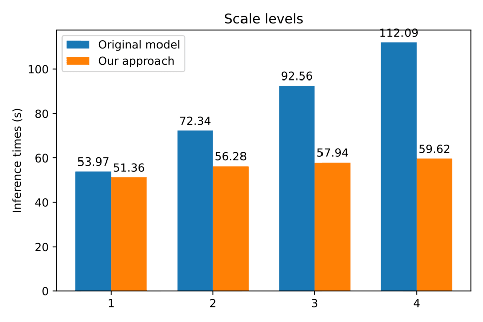

|
Namaskara! I am an AI PhD student at Oregon State University advised by Dr. Sinisa Todorovic. My primary research interests are uncertainty estimation and active learning for vision tasks on video data. Previously, I earned a Masters in Computer Science from Oregon State University under the advisement of Dr. Lizhong Chen. My research back then was focused on accelerating and scaling vision models for large scale deployment. |

|
|
I'm interested in computer vision, machine learning, uncertainty estimation, and active learning. More specifically I am working on active learning schemes that explicitly incorporate the unique constraints of video data. To this end I am working on developing uncertainty estimation techniques tailored to vision tasks on video datasets. |
|  |
Ajay Krishna, Xiang Gu, Andrew Larkin, Perry Hystad, Lizhong Chen The International Conference on Artificial Intelligence, 2021 Advances in deep learning based image processing techniques have led to their adoption for a wide range of applications, and in tow with these developments is a dramatic increase in the availability of high quality datasets. With this comes the need to accelerate and scale deep learning applications in order to keep up with the size of data and best use available hardware resources. In this paper, we propose a useful scheme to enable accelerated and distributed deployment of PSPNet inferences, which allows scaling across disparate compute clusters with recourse for system instability and heterogeneity of resources. The systemic incorporation of multiprocessing paradigms and pipelining also allows the scheme to mitigate the time penalties of multiscale inference and significantly improves total inference times when used on extremely large datasets. The use of this distributed scheme to process close to 150,000 Google Street View images as part of a public health study has demonstrated excellent promise in addressing issues of deployment, maintenance, crash recovery, and dataset management at scale |